채널: 레디포그로스 (Ready For Growth) | 길이: 17:47 | 날짜: 2026-01-12
DMN(디폴트 모드)에서 TPN(태스크 포지티브 네트워크)로 바꾸는 트리거를 강조합니다. 특히 시각적 앵커(한 지점 응시 30초~1분), 극단적으로 짧은 마감(3~5분), 행동 선행(몸을 먼저 움직이기)를 핵심 물리 스위치로 제시합니다. “몰입은 기다리는 것이 아니라 설계하는 것”이라는 문장이 전체를 관통합니다.마이크로 플로우 시스템이라 부르며, 뇌가 저항할 틈을 없앨 수준으로 목표를 잘게 쪼개야 한다고 주장합니다. 결과물 품질보다 시작 속도와 회로 형성을 우선합니다.MBTI + 지금 5분 과업 1개를 선언하는 공개 커밋을 제안합니다. 영상의 마지막 CTA는 구독·알림을 “성장 시스템 연결”로 재해석하며 채널 아이덴티티를 강화합니다.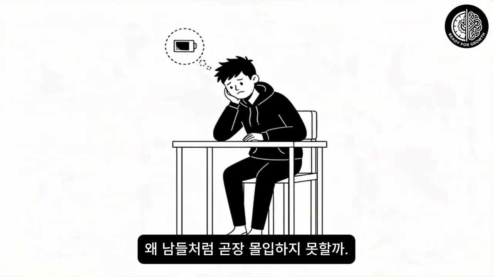
자막은 책상 앞 망설임, 멍한 화면 응시, 불필요 이메일 확인, 커피 핑계, 자기비난(“왜 의지력이 약할까”)을 연속 제시한 뒤, 결론을 반전합니다. 몰입 실패는 의지력 문제가 아니라 뇌 실행 스위치 시스템 부재라는 선언입니다.
화면에는 인물 옆에 시각 자극점(검은 점)과 0:59 타이머가 있어, 이후 전개될 “짧은 시간 기반 전환” 프레임을 선행 제시합니다.
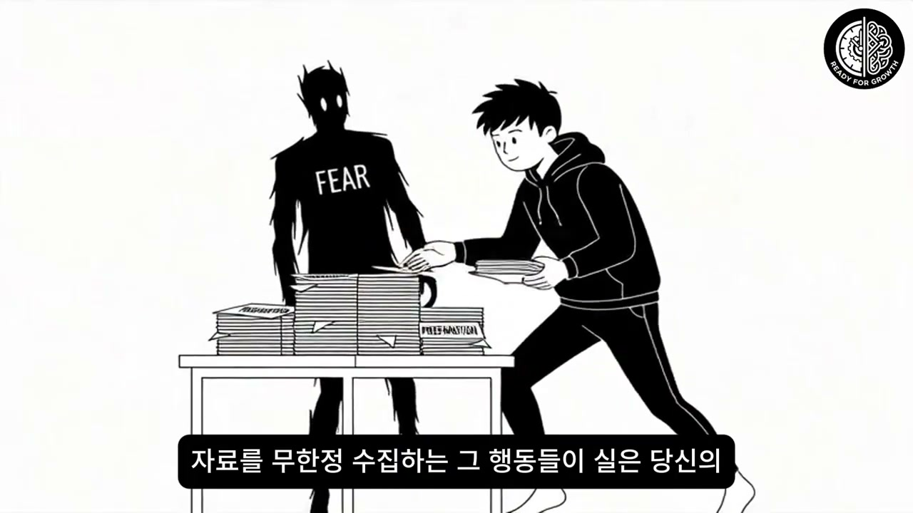
“준비”가 사실상 시작 공포를 숨기는 정교한 회피인지 자문하게 만듭니다. 완벽한 환경 만들기, 무한 자료 수집은 에너지를 갉아먹는다고 규정하며, 고민 순간에도 뇌는 DMN에 머문다고 설명합니다.
시각적으로 배터리 부족 아이콘과 지친 자세가 등장해, ‘시작 전 소진’ 상태를 직관적으로 강조합니다.
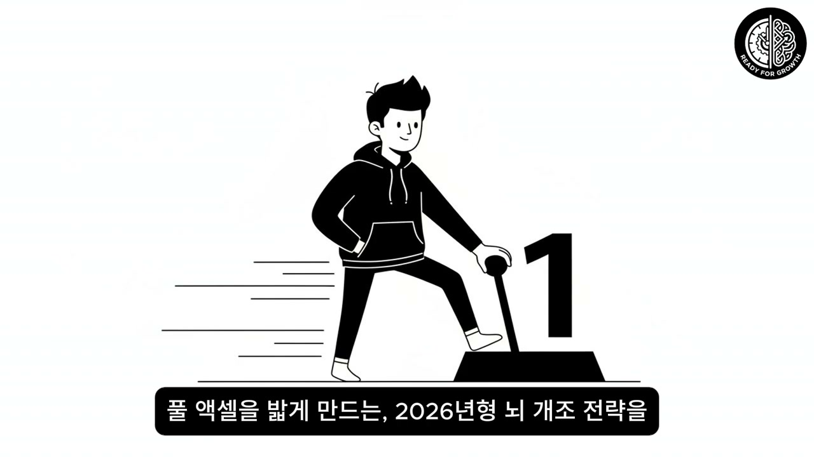
세그먼트 2의 문장 “엔진은 켜져 있는데”를 이어 받아 “기어는 중립” 비유를 완성합니다. 화자는 뇌를 1단 기어에 강제 진입시키는 “2026년형 뇌 개조 전략”을 제시하며, 몰입은 기다림이 아니라 설계라고 못박습니다.
또한 앤드류 허버먼을 인용해 인지 집중이 시각 집중에서 시작된다고 주장합니다. 화면의 거대한 1 기어 장면이 “출발/가속”의 은유를 고정합니다.
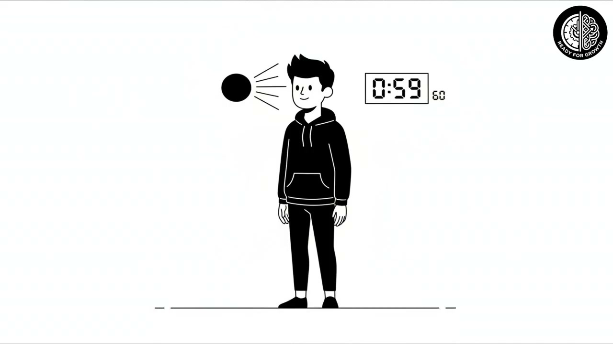
핵심 논지는 “생각 분산의 원인은 시각 초점의 분산”입니다. 특정 지점을 30초~1분 강하게 응시하면 노르에피네프린이 분비되고 TPN 진입 준비가 시작된다는 생리학적 설명이 붙습니다. 이어 “문제 하나 더: 과잉사고자들의 고질병”으로 다음 파트로 전환합니다.
화면에서는 FEAR 실루엣과 자료 더미(정보/미루기 맥락)가 시각화되어, 정보 수집 행위 뒤의 공포 동인을 드러냅니다.
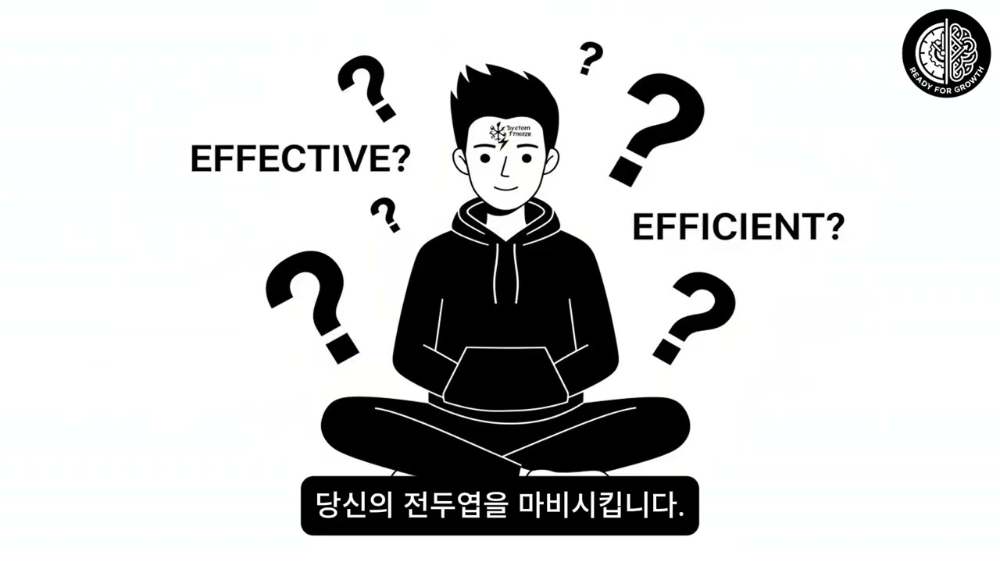
완벽주의 성향 시청자, 특히 한국 성인층을 직접 호명합니다. 시작 전 결과 불확실성을 계산하는 사고가 전두엽을 마비시키며, “효과적인가/효율적인가” 같은 메타질문이 실행을 늦춘다고 말합니다. 2026년에는 정보·AI 속도가 아니라 실행 밀도가 경쟁력이라는 메시지로 압축됩니다.
화면의 EFFECTIVE?, EFFICIENT?, 다중 물음표는 과잉 메타인지가 만든 정지 상태를 시각적으로 재현합니다.
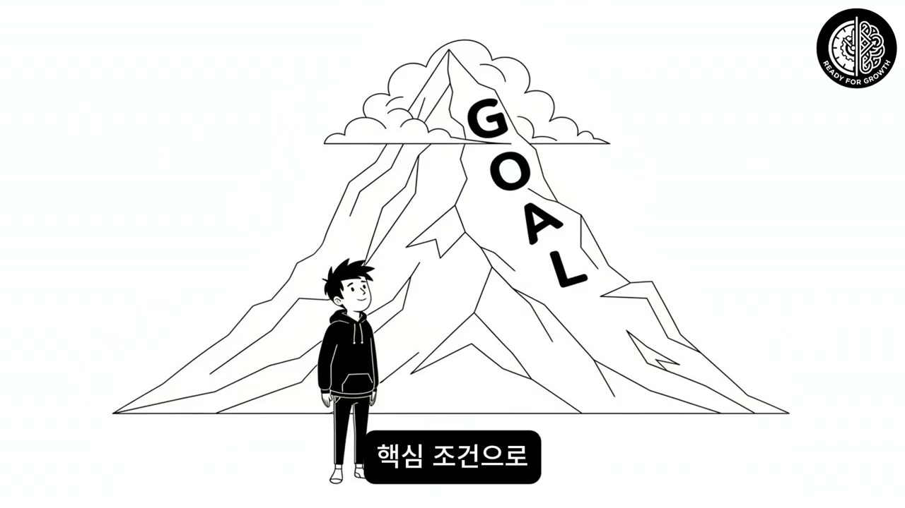
“1시간 고민보다 5분 몰입”으로 가치 기준을 뒤집습니다. 몰입 창시자 미하이 칙센트미하이의 조건(명확한 목표, 즉각 피드백)을 호출하며, “오늘 리포트 다 쓰기” 같은 거대 목표는 뇌에 공포를 준다고 진단합니다.
화면은 TASK를 잘라내는 장면으로, 과업을 작게 분해하는 행동을 직설적으로 표현합니다.
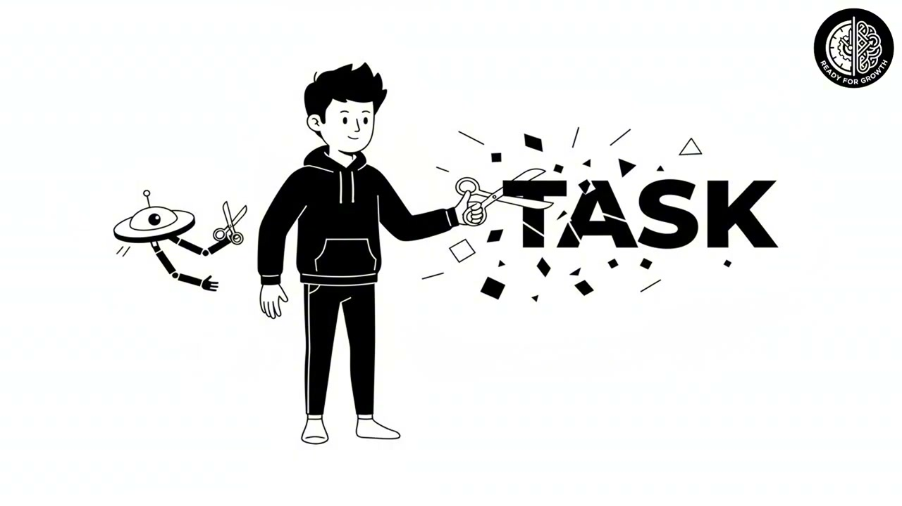
실행 규칙은 단순합니다: 딱 5분, 첫 문단만 완성. 이를 마이크로 플로우 시스템이라 명명하고, 뇌가 저항할 틈이 없을 정도로 목표를 세분화하라고 말합니다.
또한 2026년 트렌드로 AI 비서 활용을 제시합니다. 백지를 직접 뚫지 말고 AI에게 구조를 맡긴 후, 인간은 통찰 기반 수정부터 시작하라는 전략입니다. 화면의 거대한 GOAL 산은 거대 목표가 만드는 압박을 상징합니다.
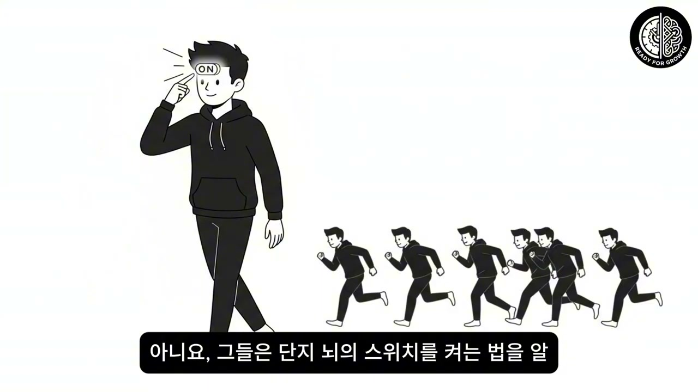
경쟁자 프레임이 강화됩니다. 남들이 더 똑똑해서가 아니라 “뇌 스위치를 켜는 법”을 알기 때문에 한 달 일을 일주일에 끝낸다고 말합니다. 5분은 쇼츠 소비시간이 될 수도, 베타파에서 감마파로 전환하는 골든타임이 될 수도 있다는 이분법을 제시합니다.
화면의 DEEP ANALYSIS 문은 “진입문” 은유를 사용해 상태 전환 이미지를 고정합니다.
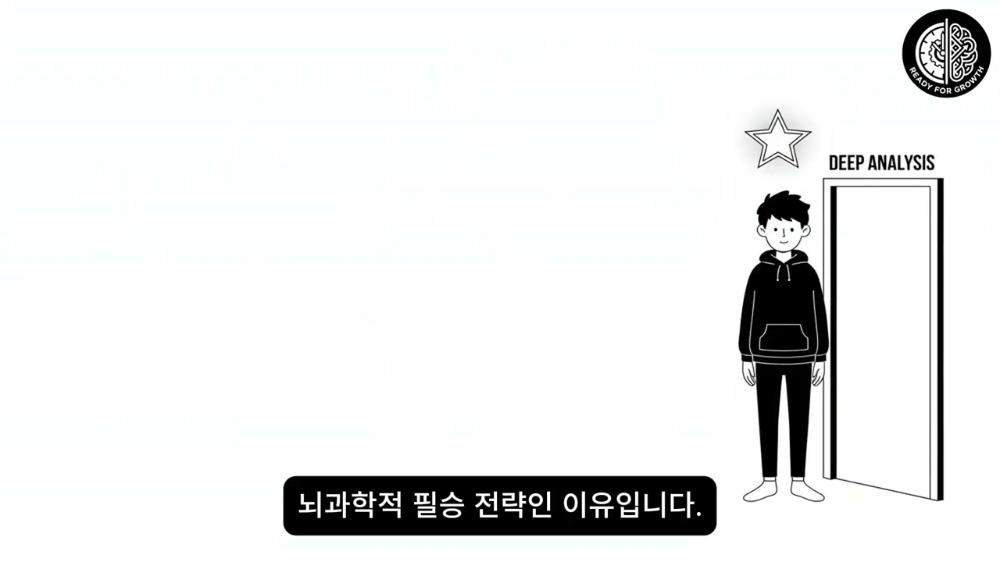
책상 위 스마트폰·메모 등 분산 요소를 제거하고 시야에는 단 하나의 과업만 남겨야 한다고 주장합니다. 이를 미니멀리즘 취향이 아니라 뇌과학적 필승 전략으로 재정의합니다. 이어 성격유형별 시작 난이도 분석으로 넘어갑니다.
점선 경로와 물음표·보상 트로피가 있는 화면은 “선택지 미로 vs 목표 보상”의 구조를 직관화합니다.
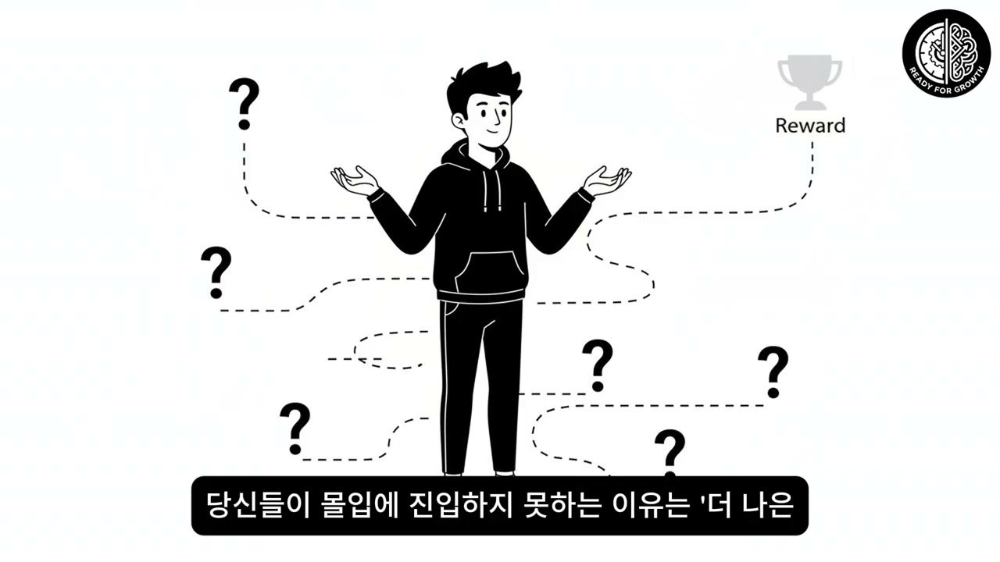
과잉사고자의 뇌는 유형마다 다른 지점에서 브레이크를 밟는다고 시작합니다. P 성향(인식형)은 더 나은 선택지에 대한 미련 때문에 진입을 못하며, 새로운 정보 탐색 시 도파민은 올라가지만 “끝냈을 때 보상 회로”는 활성화되지 않는다고 설명합니다.
그래서 검색·수집 자체가 가짜 성취감이 되어 실제 시작 동력을 빼앗는다는 결론으로 연결됩니다. 화면의 ON 스위치와 달리는 군중은 “전환된 사람들 vs 멈춘 사람” 대비를 만듭니다.
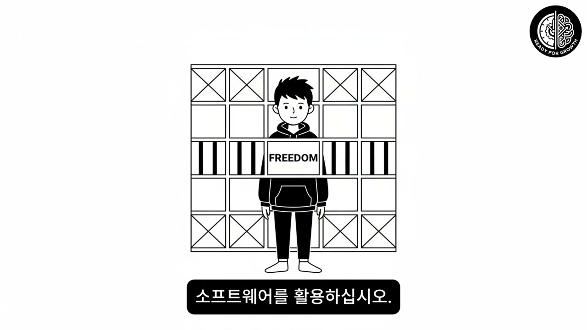
P 성향 처방은 정보 차단 시스템입니다. 시작 전 AI 검색 도구·브라우저를 강제로 잠그는 소프트웨어를 사용해, 뇌에 선택권을 주지 말고 눈앞 한 줄 텍스트만 가치 있게 만드는 환경 독재를 요구합니다.
마지막에 J 성향(판단형)으로 전환하며, 이들의 브레이크는 완벽 계획 강박에서 온다고 예고합니다. 시각적으로 FREEDOM과 격자/차단 구조를 병치해 “제약이 오히려 자유”라는 역설을 표현합니다.
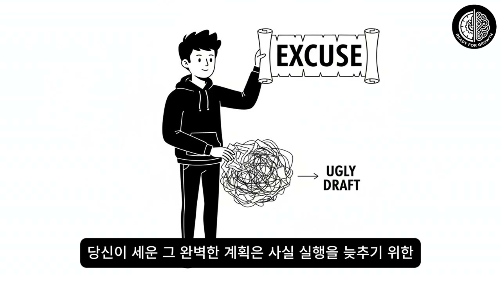
계획이 완벽하지 않으면 뇌는 위협으로 해석하고 코르티솔을 분비해 시작 전 스트레스를 높인다고 설명합니다. 따라서 “완벽한 계획”은 실행 지연을 위한 우아한 변명이며, 필요한 것은 거칠고 추한 초안 시스템이라고 단정합니다.
핵심 처방은 “아무에게도 보여주지 않을 쓰레기 같은 결과물을 5분 안에 뽑겠다”는 전략적 포기입니다. 화면의 EXCUSE와 UGLY DRAFT는 바로 이 메시지의 시각적 직역입니다.
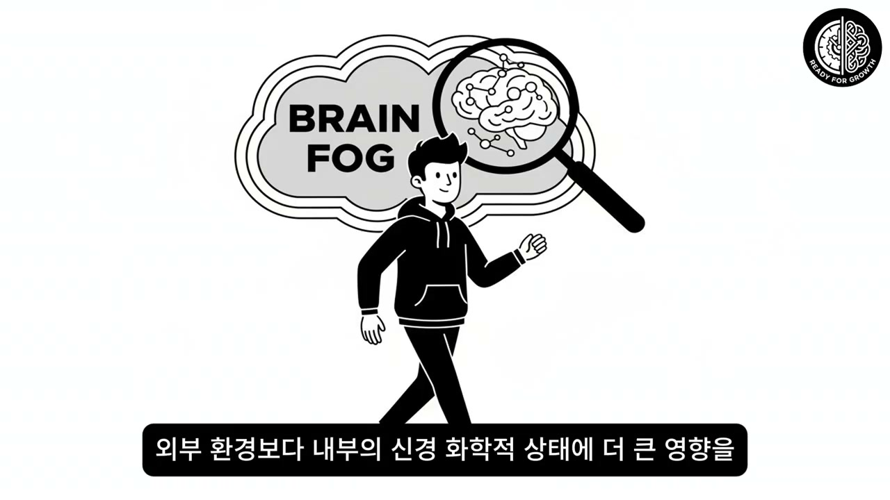
이제 심리 기술을 넘어 “2026년형 뉴로스택”으로 전환합니다. 화자는 하버드 최근 연구를 인용해 집중력은 외부 환경보다 내부 신경화학 상태의 영향을 더 크게 받는다고 말합니다.
브레인포그를 염증/전달물질 불균형 결과로 설명하며, 몰입 스위치 이전에 뇌 가용 에너지 확보가 선행돼야 한다고 주장합니다. 화면에는 ALPHA & THETA 파형과 SOCIAL MEDIA 투기 이미지가 배치됩니다.
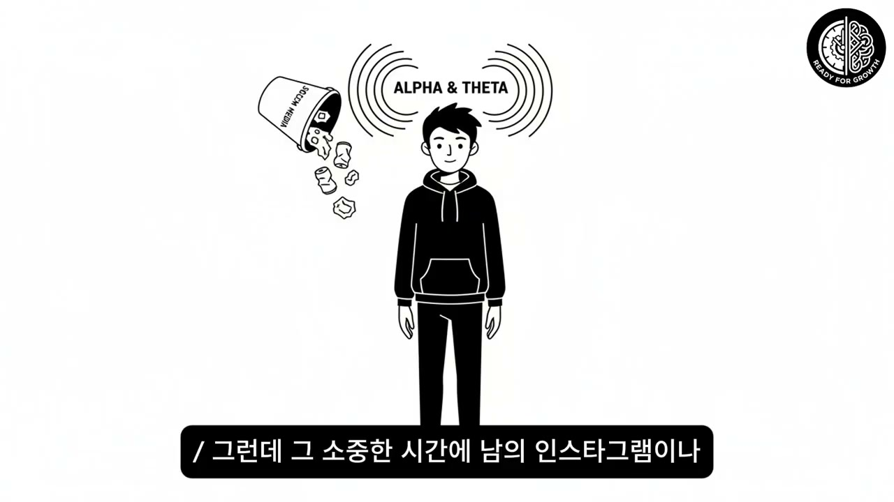
아침 기상 직후 스마트폰 확인 습관을 “끔찍한 습관”으로 규정합니다. 알파·세타 교차 구간은 창의성과 수용성이 높은 시간인데, 이때 자극적 피드/뉴스를 넣는 건 고성능 컴퓨터에 오염 데이터를 투입하는 것과 같다는 비유를 사용합니다.
2026년 성공한 자산가들은 아침 첫 1시간을 의도적으로 디지털 단식한다고 제시합니다. BRAIN FOG 시각은 이 주장의 손실 이미지를 담당합니다.
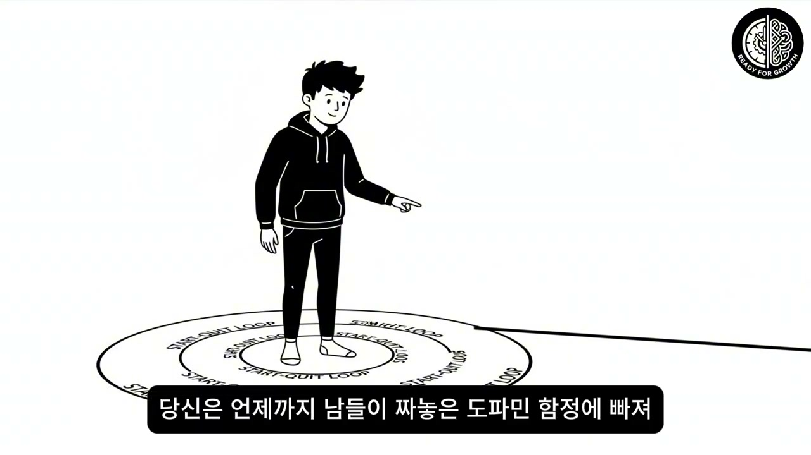
디지털 단식은 도파민 수용체를 보호해 “5분 더 빠르고 깊은 몰입”을 만드는 체력 기반이라고 주장합니다. 이어 도파민 함정·거창한 시작/흐지부지한 마무리 패턴을 강하게 질타하고, 이제는 시스템으로 자신을 구속해야 할 때라고 촉구합니다.
“규율은 감옥이 아니라 울타리”라는 문장으로 다음 세그먼트에 연결됩니다. 화면의 START-QUIT LOOP는 반복 실패 고리를 정확히 시각화합니다.
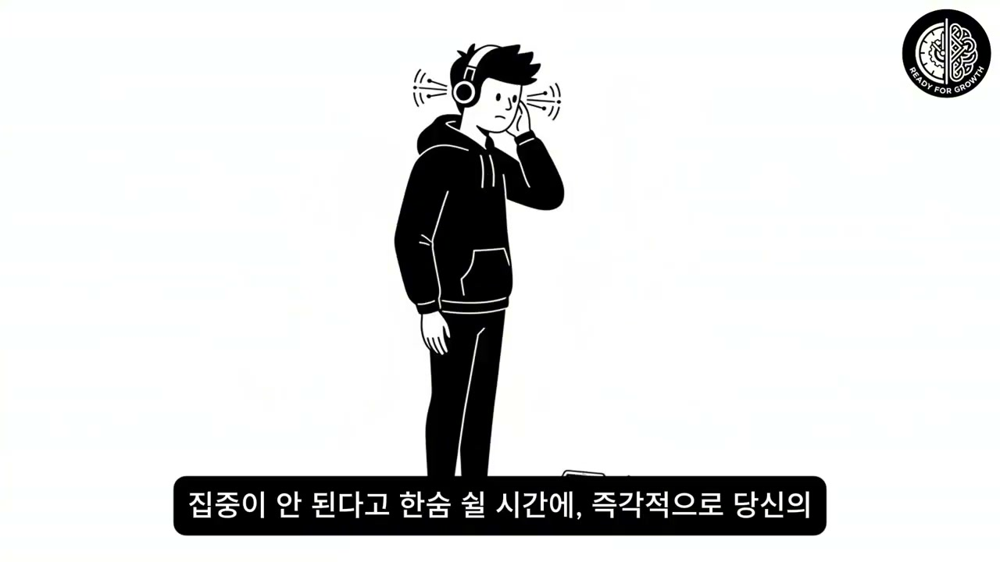
세그먼트 15의 문장을 완성해 규율=재능 보호 울타리로 정의합니다. 추가로 앤드류 허버먼이 제안한 기술로 40% 감마파 음원을 제시하고, 2026년에는 AI 맞춤형 바이노럴 비트가 보편화됐다고 설명합니다.
도구는 이미 준비되어 있으며 문제는 사용 태도라고 정리합니다. “영상 보며 고개 끄덕이는 것”도 가짜 몰입이라는 비판으로 행동 전환 압박을 높입니다.
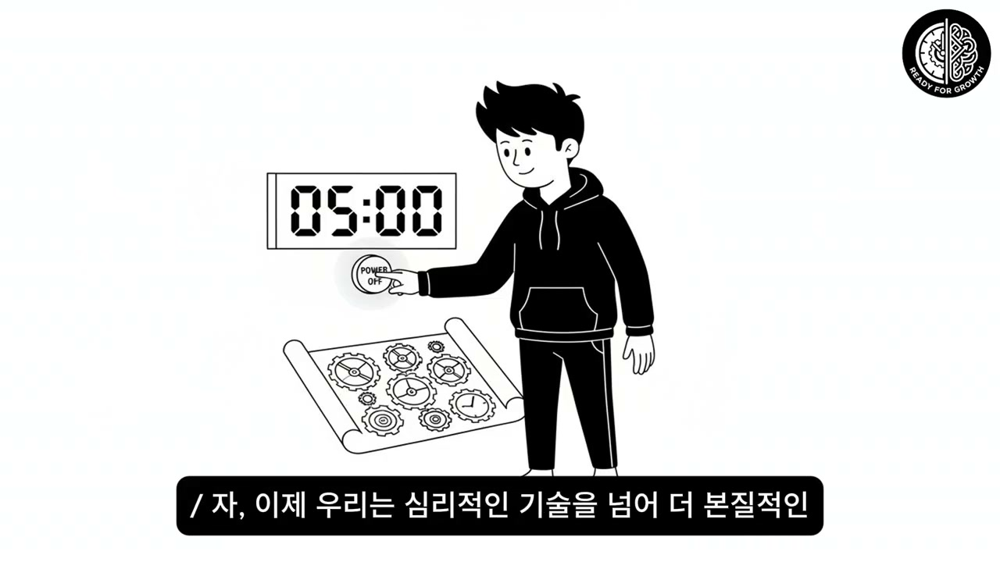
진짜 스위치는 영상 시청 중이 아니라 영상을 끈 직후 5분 행동에서 결정된다고 못박습니다. 이후 심리 기법에서 생물학 메커니즘으로 넘어가며, 새 일을 시작할 때 강력한 저항을 만드는 주체를 편도체로 지목합니다.
05:00 타이머와 POWER OFF 버튼 시각은 “지금 끄고 실행”이라는 전환 의식을 직접적으로 구현합니다.
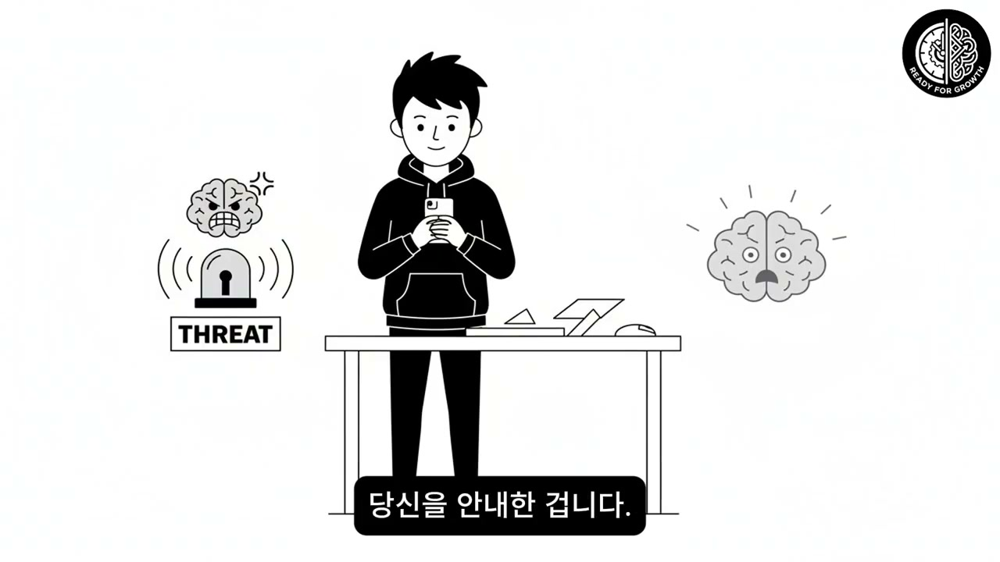
편도체는 새로운 도전·집중 상황을 위협으로 간주하고, 책상 앞에서 스마트폰을 잡는 짧은 순간에도 전두엽을 약화시켜 쉬운 도파민 회피로 유도한다고 설명합니다.
이를 깨기 위한 2026 엘리트 전략으로 노르에피네프린/아드레날린 트리거를 제시하며, 몰입에는 약한 긍정적 스트레스가 필요하다고 덧붙입니다. THREAT 경보와 긴장한 뇌 아이콘이 메시지를 강화합니다.
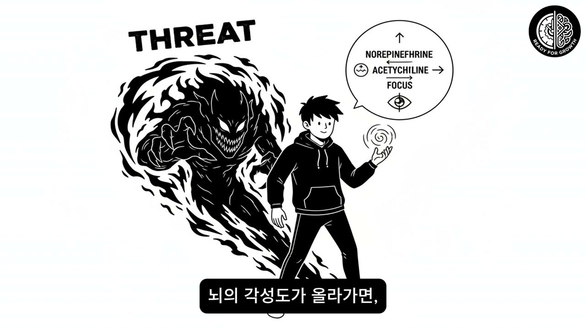
구체 처방은 매우 짧은 마감: “지금부터 3분 안에 목차 3개.” 핵심은 뇌가 위협을 충분히 감지하기 전에 행동이 먼저 끝나게 시간을 설계하는 것입니다.
화자는 각성 상승 이후 아세틸콜린 분비와 시각 초점 고정이 시작된다고 말하며 이를 “몰입의 화학적 순서”라 부릅니다. 화면의 MOOD vs ROUTINE 구조는 감정 대신 프로토콜을 따르라는 메시지와 정확히 맞물립니다.
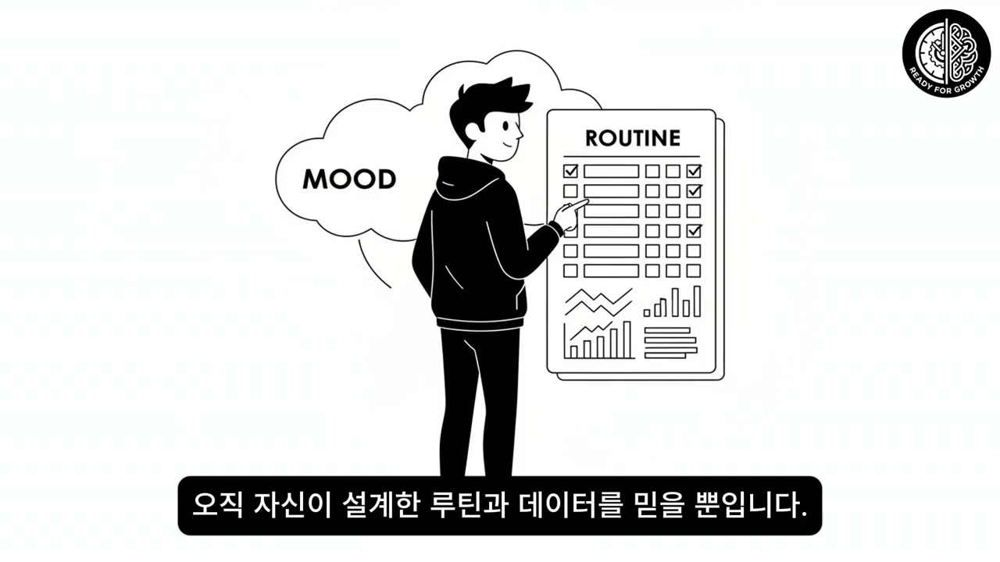
“기분이 안 나서”라는 핑계를 정면 비판합니다. 성장은 감정이 아니라 시스템에서 나오며, 지적 전략가는 기분이 아니라 루틴과 데이터를 신뢰해야 한다고 말합니다.
AI가 생체신호 분석으로 집중 적기를 알려줄 수 있어도, 최종 스위치를 누르는 건 개인의 작은 의지라는 결론으로 책임을 환원합니다. 화면의 THREAT 괴물과 NOREPINEPHRINE / ACETYCHILINE / FOCUS 텍스트는 위협 에너지를 집중으로 전환하는 화학 프레임을 시각화합니다.
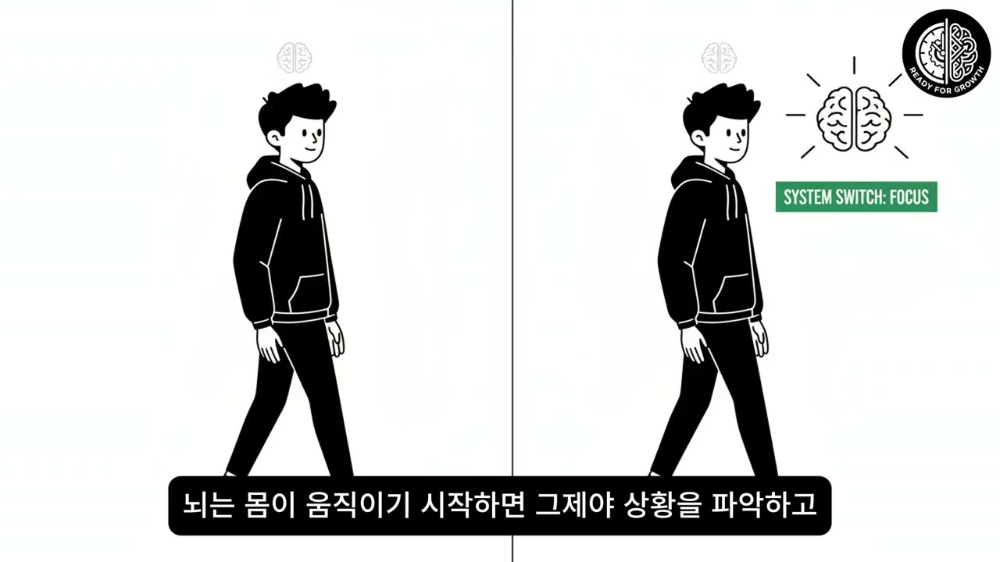
수많은 걱정 시나리오 중 실제 발생은 극소수이며, 90% 이상은 뇌가 만든 허상이라고 단언합니다. 허상을 깨는 유일한 방법은 물리적 움직임이며, 몸이 먼저 움직이면 뇌가 상황을 재판단하고 에너지를 집중시키기 시작한다고 설명합니다.
여기서 의도적 마찰 개념을 도입해 다음 단계(환경 설계)로 넘어갑니다. 화면도 좌우 분할 전/후(SYSTEM SWITCH: FOCUS)로 상태 전환을 명확히 보여줍니다.
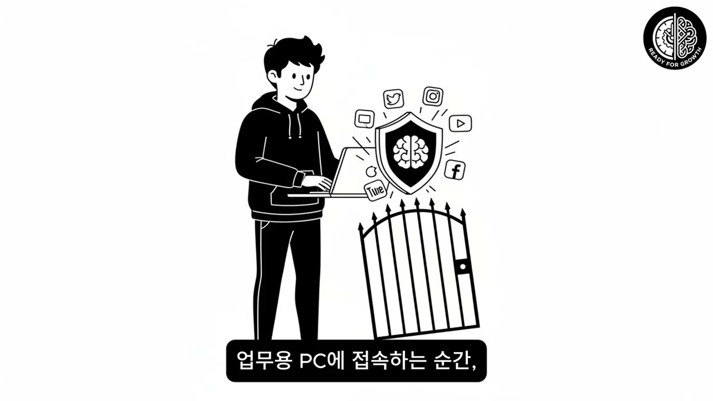
원칙은 이중 설계입니다. 집중 방해요소에는 거대한 마찰을, 집중 대상에는 무마찰 상태를 설계하라는 것입니다.
2026 생산성 시스템으로 AI 기반 환경 통제 자동화를 추천하며, 업무용 PC 접속 시 비업무 사이트 완전 차단, 몰입 필수 프로그램 자동 실행을 기본값으로 제시합니다. 핵심 문장은 “의지력이 개입할 틈을 주지 말라”입니다. 화면의 노트북/방패/SNS 아이콘/철문이 이 구조를 직관화합니다.
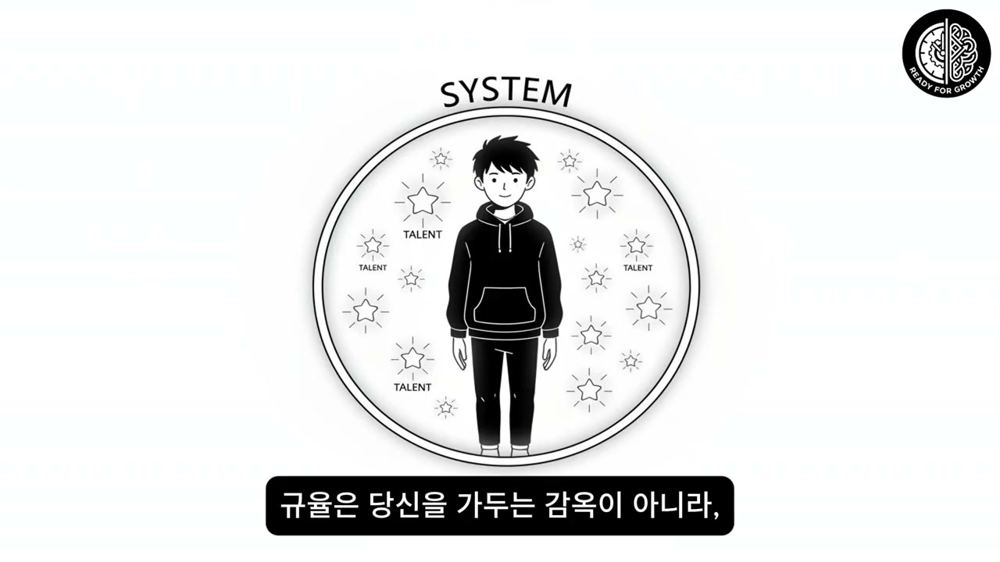
도파민 함정과 허울뿐인 시작 패턴을 다시 한번 반복 호출하며, 시스템 기반 자기구속을 최종적으로 강화합니다. 규율은 감옥이 아니라 재능 보호 울타리이고, 깊은 몰입 경험이 반복될수록 회로가 강화된다는 신경가소성 내러티브를 제시합니다.
“오늘 억지로 켠 5분 스위치”가 이후 더 빠른 스위치로 진화한다는 다음 세그먼트의 예고로 끝납니다. 화면의 원형 SYSTEM과 다수의 TALENT 표식은 보호-증식 프레임을 시각화합니다.
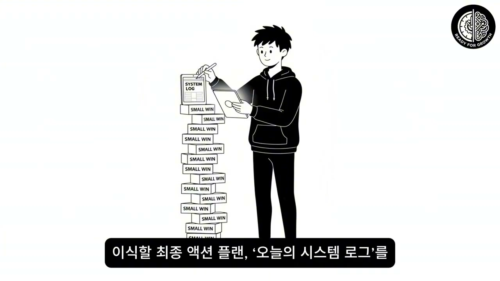
핵심 수치가 제시됩니다: 오늘 5분 → 내일 4분 → 모레 1분 진입. 즉 뉴로스택의 성과는 거대한 도약이 아니라 작은 승리의 누적으로 완성된다는 주장입니다.
마인드 준비를 기다릴 필요 없이 시스템이 준비됐으면 몸이 먼저 움직여야 하며, 이를 즉시 이식할 최종 액션 플랜이 오늘의 시스템 로그라고 정의합니다. 화면의 SMALL WIN 탑과 SYSTEM LOG는 행동 누적 장부의 의미를 명확히 전달합니다.
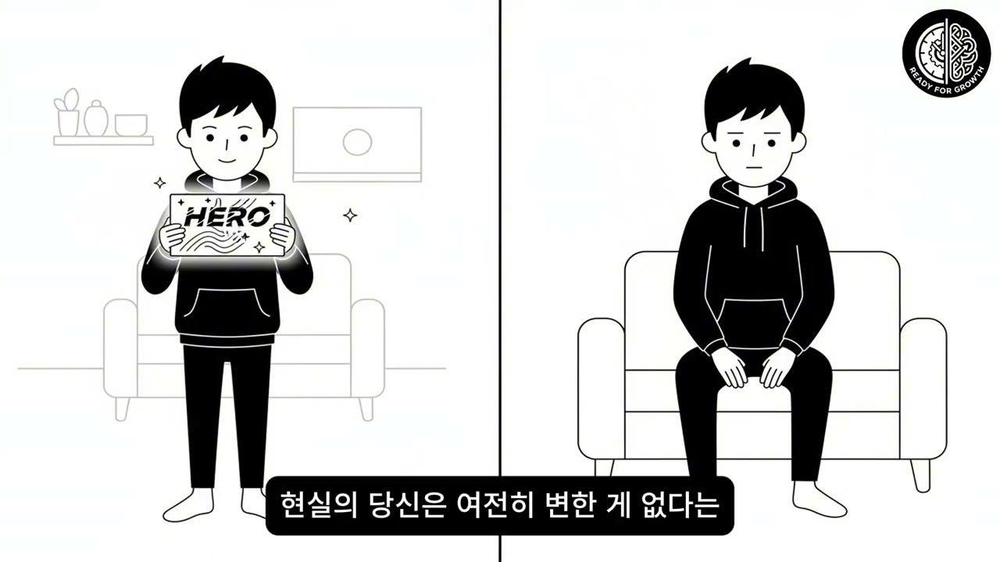
가장 강한 경고 구간입니다. 실행 없는 전략 학습은 뇌 도파민을 잠깐 채우는 지적 유희이며, 자기계발 영상 시청이 “대단한 일을 했다”는 착각을 만들지만 현실은 변하지 않는다고 직격합니다.
2026년 세계를 “주의력을 자본으로 치환하는 시스템”으로 정의하며, 몰입 스위치를 못 켠 채 쇼츠/릴스에 시간을 쓰면 플랫폼 기업 주가가 오르고 개인 자산가치는 하락한다고 말합니다. 화면은 ‘HERO 자기이미지’와 ‘변화 없는 현실 자아’를 좌우 분할해 이 착각 구조를 시각화합니다.
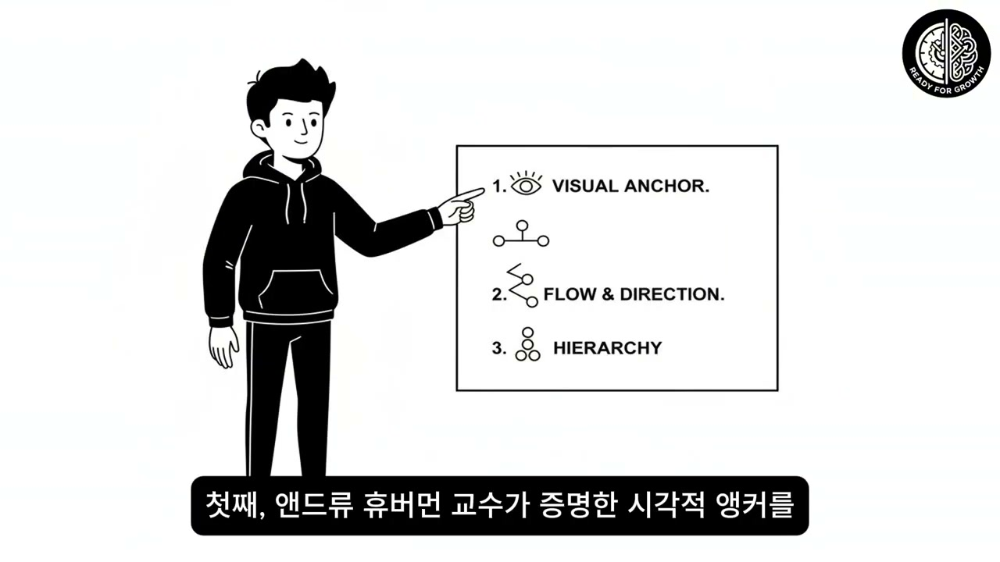
문제를 단순 시간관리에서 인생 주권 전쟁으로 격상합니다. 이어 최종 요약 3단계를 제시합니다:
첫째, 허버먼이 강조한 시각 앵커 확보(시선 고정→인지 고정).
둘째, 노르에피네프린/아드레날린 유도를 위한 5분 극한 마감.
셋째, 2026 도구인 AI를 활용해 시작 마찰 제로화.
화면 텍스트는 1. VISUAL ANCHOR / 2. FLOW & DIRECTION / 3. HIERARCHY로 표시되어, 자막 외에 “계층화된 작업 설계”라는 시각적 보조 개념도 제공합니다.
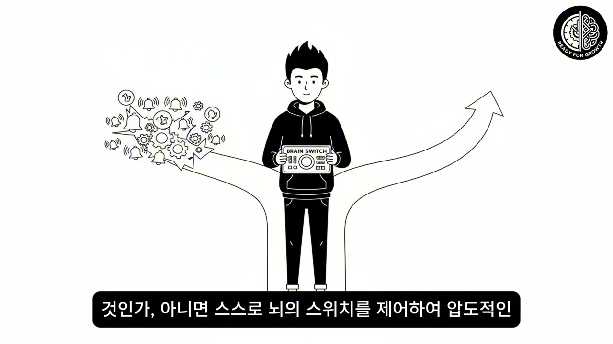
“백지 고통은 기술에 외주”라는 문장으로 AI 사용의 실천적 의미를 재강조합니다. MBTI 성향별로 환경을 독재적으로 통제하라고 주문하며, ‘알림 세계의 부품’으로 남을지 ‘뇌 스위치를 제어하는 설계자’가 될지 선택하라고 압박합니다.
또한 오늘의 5분 스위치가 1년·10년 뒤 재정적 자유를 결정할 신호탄이라고 장기 효과를 강조합니다. 화면의 DECLARE IT!와 COMMENT: MBTI & 5-MIN TASK.는 공개 선언형 행동 장치를 시각화합니다.
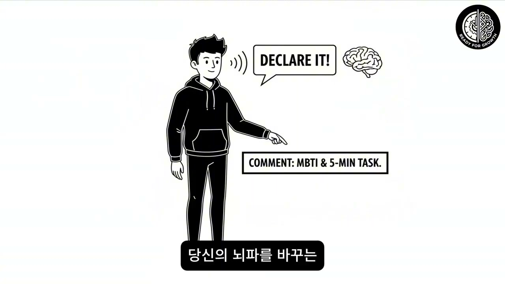
즉시 실행 지시가 직접적으로 등장합니다. 영상 종료 후 마지막 절차로 오늘의 시스템 로그를 작성하고, 댓글에 MBTI와 “지금 당장 5분 안에 끝낼 단 하나의 과업”을 선언하라고 요구합니다.
작은 선언이 뇌파를 바꾸는 실행 신호라고 설명한 뒤, 구독/좋아요/알림을 성장 시스템 연결로 재해석해 CTA를 완결합니다. 화면은 분기점에서 BRAIN SWITCH를 들고 노이즈 쪽과 상승 화살표 쪽 사이 선택하는 구조를 보여줍니다.
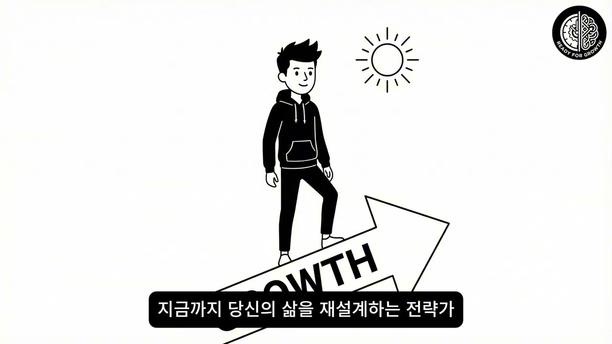
짧은 채널 시그니처 멘트로 마무리됩니다: “당신의 삶을 재설계하는 전략가, 레디포그로스.”
상승 화살표(GROWTH) 위에 선 인물 비주얼로 영상 전반의 핵심 프레임(스위치-실행-성장)을 상징적으로 닫습니다.
“당신이 지금 몰입에 실패한 건 의지력이 부족해서가 아닙니다.”
“몰입은 기다리는 것이 아니라 설계하는 것입니다.”
“특정 지점을 30초에서 1분간 강하게 응시하는 것만으로도… TPN 상태로 진입할 준비를 마칩니다.”
“이 시대에 인간이 가질 수 있는 유일한 경쟁력은 생각의 속도가 아니라 실행의 밀도입니다.”
“딱 5분 동안 첫 번째 문단만 완성한다.”
“당신의 뇌에게 선택권을 주지 말고… 텍스트 한 줄에만 가치가 있게 만드는 환경 독재가 필요합니다.”
“당신이 세운 완벽한 계획은 사실 실행을 늦추기 위한 가장 우아한 변명입니다.”
“브레인포그는… 신경 전달물질이 불균형할 때 나타납니다.”
“성장은 감정이 아니라 시스템에서 나옵니다.”
“90% 이상의 걱정은 뇌가 만들어낸 허상입니다.”
“규율은 당신을 가두는 감옥이 아니라 재능이 낭비되지 않도록 보호하는 울타리입니다.”
“실행하지 않는다면… 그저 뇌의 도파민을 잠시 채워주는 지적 유희에 불과합니다.”
이 영상의 핵심은 “집중력”을 의지·성격의 문제가 아니라 환경 설계 + 생물학 트리거 + 초단기 행동 프로토콜의 문제로 재정의한 데 있습니다. 특히 5분 단위의 강제 진입, 정보 차단, 시각 앵커, 물리적 움직임, AI 기반 마찰 제거를 하나의 연동 시스템으로 묶어 제시한 점이 실천 프레임의 중심입니다.
실용적으로는 다음이 바로 적용 포인트입니다.
1) 시작 전 30~60초 시각 앵커 고정.
2) “3분 목차 3개” 또는 “5분 첫 문단”처럼 과업을 극단적으로 축소.
3) 브라우저/검색/피드 차단을 자동화해 의지 개입 여지 제거.
4) 아침 첫 1시간 디지털 단식으로 도파민/주의력 소모 최소화.
5) 하루 종료 전 오늘의 시스템 로그에 작은 승리 누적.
향후 전망으로는 영상이 말하듯 2026년 이후 생산성 격차가 “지식량”이 아니라 “시작 전환 속도”에서 더 크게 벌어진다는 프레임이 강화됩니다. 결국 이 콘텐츠는 자기계발 정보 소비를 멈추고, 즉시 5분 행동으로 회로를 바꾸라는 단일 명령으로 수렴합니다.
댓글
GitHub 이슈 기반 댓글 시스템입니다.